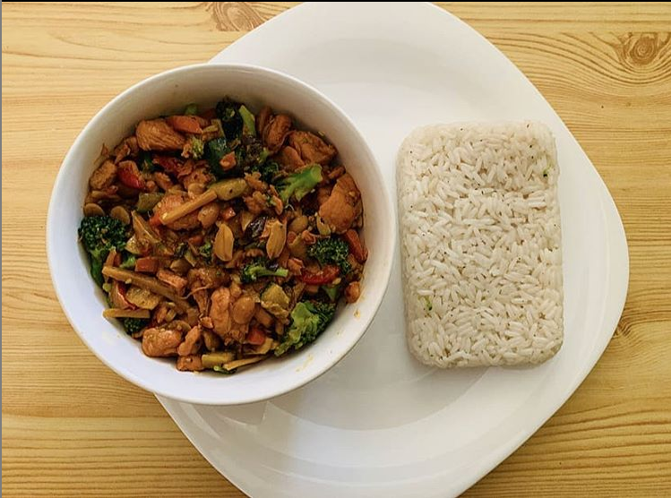

Gong-bao Chicken

Ingredients:
- 500g chicken breast
- 1 tablespoon sesame oil
- 1 zucchini, diced
- 1 red pepper, diced
- 30 g peanuts
- 1 tablespoon soy sauce
- 2 tablespoons ginger
- 2 tablespoons cornstarch
- 2 tablespoons water
- 1 teaspoon rice vinegar
- 1 bunch green onion, sliced
Time: 60 minutes
Steps:
- In a medium bowl, combine chicken with all the marinade ingredients in a bowl. Let marinate for at least 10 minutes.
- In an oiled pan, cook chicken on medium-high heat until cooked through on both sides. Remove from pan.
- Add sesame oil, zucchini, and red pepper, and sauté in pan for 3 minutes.
- Add peanuts and sauté for another 3 minutes.
- Add dried chilies, garlic, ginger, and green onion, and sauté until vegetables are tender.
- Add chicken, soy sauce, rice vinegar, sugar, and cornstarch slurry, and sauté until well mixed.
- Garnish with more green onion and serve with rice.